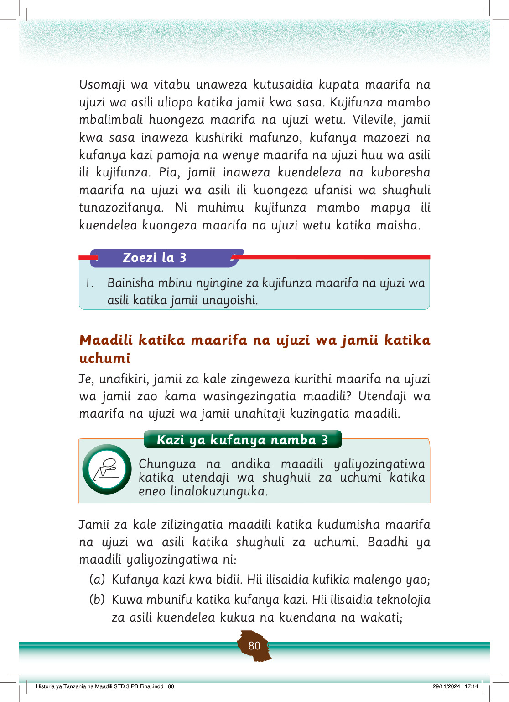

Usomaji wa vitabu unaweza kutusaidia kupata maarifa na ujuzi wa asili uliopo katika jamii kwa sasa.
Kujifunza mambo mbalimbali huongeza maarifa na ujuzi wetu.
Vilevile, jamii kwa sasa inaweza kushiriki mafunzo, kufanya mazoezi na kufanya kazi pamoja na wenye maarifa na ujuzi huu wa asili ili kujifunza.
Pia, jamii inaweza kuendeleza na kuboresha maarifa na ujuzi wa asili ili kuongeza ufanisi wa shughuli tunazozifanya.
Ni muhimu kujifunza mambo mapya ili kuendelea kuongeza maarifa na ujuzi wetu katika maisha.
Zoezi la 3
1.
Bainisha mbinu nyingine za kujifunza maarifa na ujuzi wa asili katika jamii unayoishi.
Maadili katika maarifa na ujuzi wa jamii katika uchumi
Je, unafikiri, jamii za kale zingeweza kurithi maarifa na ujuzi wa jamii zao kama wasingezingatia maadili?
Utendaji wa maarifa na ujuzi wa jamii unahitaji kuzingatia maadili.
Kazi ya kufanya namba 3: Chunguza na andika maadili yaliyazingatiwa katika utendaji wa shughuli za uchumi katika eneo linalokuzunguka.
Kazi ya kufanya namba 3
Chunguza na andika maadili yaliyozingatiwa katika utendaji wa shughuli za uchumi katika eneo linalokuzunguka.
Jamii za kale zilizingatia maadili katika kudumisha maarifa na ujuzi wa asili katika shughuli za uchumi.
Baadhi ya maadili yaliyozingatiwa ni:
(a) Kufanya kazi kwa bidii.
Hii ilisaidia kufikia malengo yao;
(b) Kuwa mbunifu katika kufanya kazi.
Hii ilisaidia teknolojia za asili kuendelea kukua na kuendana na wakati;
Historia ya Tanzania na Maadili STD 3 PB Final.indd 80
29/11/2024 17:14